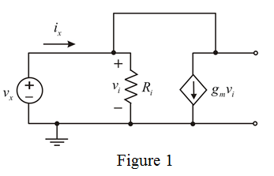

Write the expression for input resistance.
…… (1)
Apply Kirchhoff’s current law.
…… (2)
From figure 1, determine the value of voltage
Substitute for  in equation (2).
in equation (2).
Refer to Figure P1.56 in the textbook.
Apply a test voltage source across the terminals and the current flowing from it.
Draw the modified circuit diagram.

Write the expression for input resistance.
…… (1)
Apply Kirchhoff’s current law.
…… (2)
From figure 1, determine the value of voltage
Substitute for in equation (2).
Write the expression for input resistance.
Substitute for in the equation.
Therefore, the expression for input resistance is  .
.